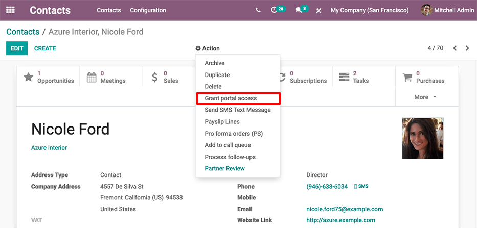
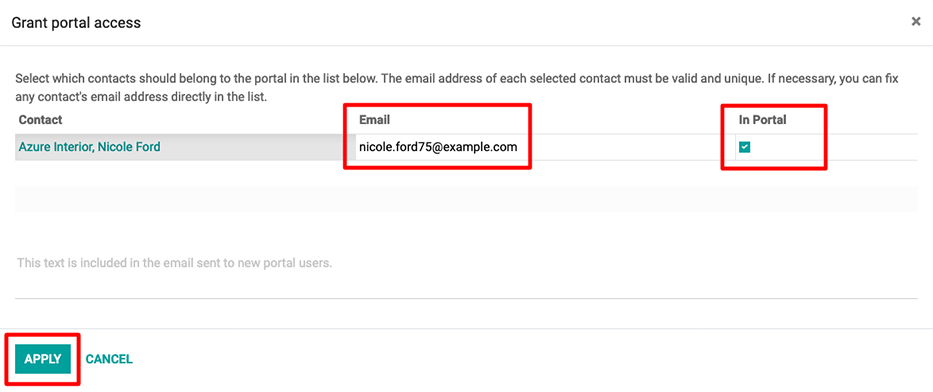

Portal access¶
Portal access is given to users who need the ability to view certain documents or information within an Odoo database.
Some common use cases for providing portal access include allowing customers to read/view any or all of the following in Odoo:
leads/opportunities
quotations/sales orders
purchase orders
invoices & bills
projects
tasks
timesheets
tickets
signatures
subscriptions
Note
Portal users only have read/view access, and will not be able to edit any documents in the database.
Provide portal access to customers¶
From the main Odoo dashboard, select the Contacts application. If the contact is not yet created in the database, click on the Create button, enter the details of the contact, and then click Save. Otherwise, choose an existing contact, and then click on the Action drop-down menu located at the top-center of the interface.
Then select Grant portal access. A pop-up window appears, listing three fields:
Contact: the recorded name of the contact in the Odoo database
Email: the contact’s email address that they will use to log into the portal
In Portal: whether or not the user has portal access
To grant portal access, first enter the contact’s Email they will use to log into the portal. Then, check the box under the In Portal column. Optionally, add text to the invitation message the contact will receive. Then click Apply to finish.
An email will be sent to the specified email address, indicating that the contact is now a portal user for that Odoo database.
Tip
To grant portal access to multiple users at once, navigate to a company contact, then click to view a list of all of the company’s related contacts. Check the box under the In Portal column for all the contacts that need portal access, then click Apply.
Note
At any time, portal access can be revoked by navigating to the contact, clicking , and then unselecting the checkbox under the In Portal column and clicking Apply.
Change portal username¶
There may be times when a portal user wants to change their user login. This can be done by any user in the database with administrator access rights. The following process outlines the necessary steps to change the portal user login.
First, navigate to . Then, under Filters, select
Portal Users, or select Add Custom Filter and set the following
configuration Groups > contains > portal. After making this selection,
search for (and open) the portal user that needs to be edited.
Next, click Edit (if necessary), click into the Email Address field, and proceed to make any necessary changes to this field. The Email Address field is used to log into the Odoo portal.
Note
Changing the Email Address (or login) only changes the username on the customer’s portal login.
In order to change the contact email, this change needs to take place on the contact template in the Contacts app. Alternatively, the customer can change their email directly from the portal, but the login cannot be changed. See change customer info.
Customer portal changes¶
There may be times when the customer would like to make changes to their contact information, password/security, or payment information attached to the portal account. This can be performed by the customer from their portal. The following process is how a customer can change their contact information.
Change customer info¶
First enter the username and password (login) into the database login page to access the portal user account. A portal dashboard will appear upon successfully logging in. Portal documents from the various installed Odoo applications will appear with the number count of each.
See also
Next, navigate to the upper-right corner of the portal, and click the Edit button, next to the Details section. Then, change the pertinent information, and click Confirm.
Change password¶
First enter the username and password (login) into the database login page to access the portal user account. A portal dashboard will appear upon successfully logging in.
If the customer would like to change their password for portal access, click on the Edit Security Settings link, below the Account Security section. Then, make the necessary changes, by typing in the current Password, New Password, and verify the new password. Lastly, click on Change Password to complete the password change.
Note
If a customer would like to change the login, as documented above, contact the Odoo database point-of-contact. See above documentation on changing the portal username.
Note
Passwords for portal users and Odoo.com users remain separate, even if the same email address is used.
Add two-factor authentication¶
First enter the username and password (login) into the database login page to access the portal user account. A portal dashboard will appear upon successfully logging in.
If the customer would like to turn on two-factor authentication (2FA) for portal access, click on the Edit Security Settings link, below the Account Security section.
Click on Enable two-factor authentication to turn on 2FA. Confirm the current portal password in the Password field. Then, click on Confirm Password. Next, activate 2FA in a 2FA app (Google Authenticator, Authy, etc.), by scanning the QR code or entering a Verification Code.
Finally, click Enable two-factor authentication to complete the setup.
Change payment info¶
First enter the username and password (login) into the database login page to access the portal user account. A portal dashboard will appear upon successfully logging in.
If the customer would like to manage payment options, navigate to the Manage payment methods in the menu on the right. Then, add the new payment information, and select Add new card.